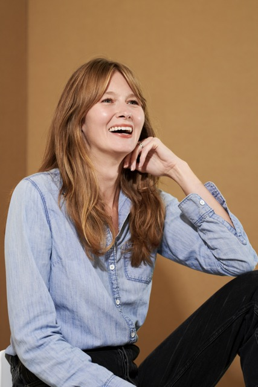

Senior Director & Assistant Dean · Institute of Design at Illinois Tech
Editorial Director · Content Strategist · AI & Writing Researcher
PhD 2028
I play the long game: defining your organization's purpose, asserting its voice, and maintaining both—across channels, media moments, and hype cycles.
For more than fifteen years I've worked at the intersection of ideas and audiences: translating research for publics, building editorial ecosystems that hold together across platforms and constituencies, and asking what success means as the rules of the game change under our feet. My expertise lies in establishing sustainable content programs for mission-driven organizations.

Selected work
Impact by Design — An extension of ID's Latham Fellowship, tracing the patterns behind great design impact. Published 2026.
Ten years of editorial and strategic work at the Institute of Design—reports, podcasts, exhibitions, partnerships, and a complete institutional rebrand. See all work →